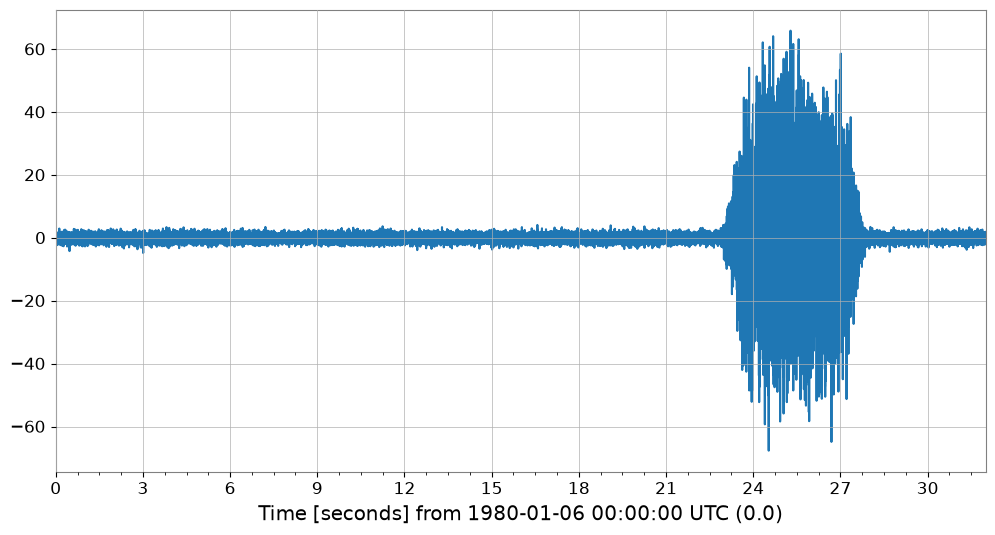
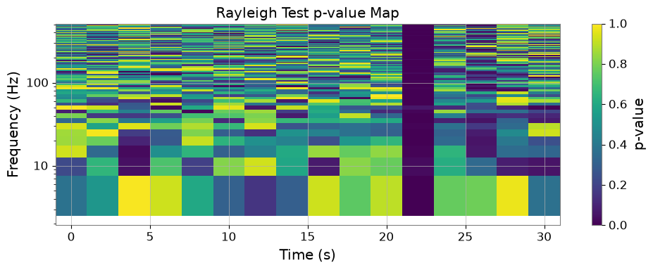
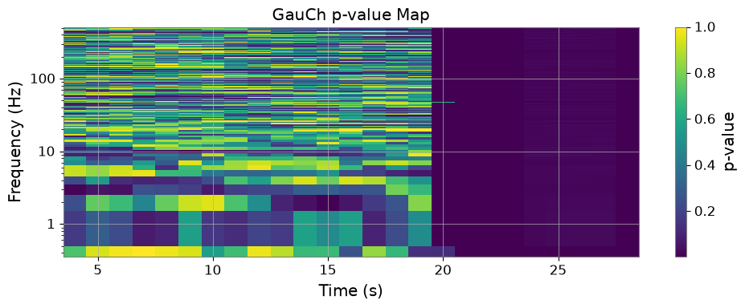
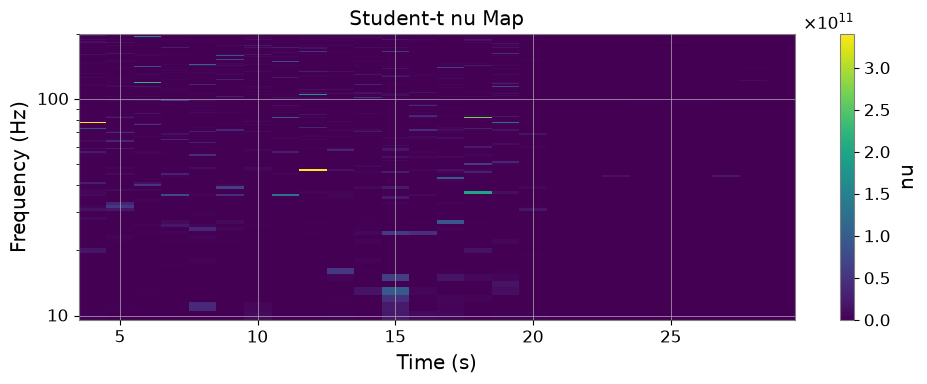
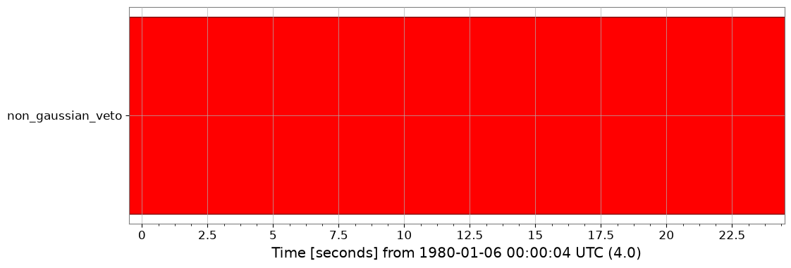
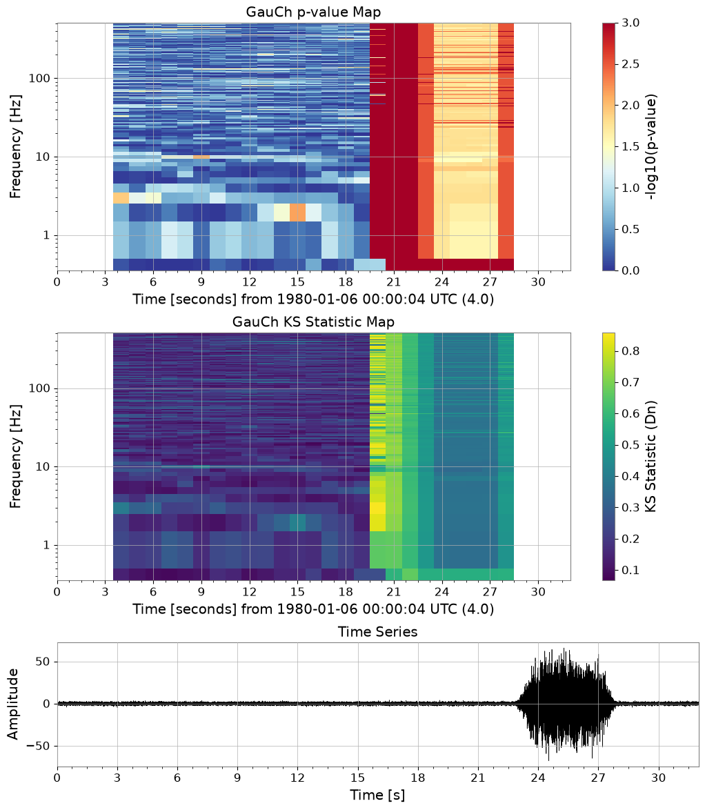

Non-Gaussian Noise Analysis: Rayleigh and Gaussian-Chi#
This tutorial demonstrates the implementation of a comprehensive non-Gaussian noise analysis toolkit in GWexpy, based on research by Yamamura (2024) and Yamamoto (2015-2016).
Contents#
Noise Simulation: Generating non-stationary and scattered light noise.
Rayleigh Statistics: Testing deviations from Rayleigh distribution.
GauCh (Modified KS Test): Advanced non-Gaussianity detection.
Student-t Indicator: Measuring distribution tail thickness.
Data Quality Flags: Generating veto segments automatically.
Evaluation & Visualization: ROC curves and composite dashboards.
import warnings
warnings.filterwarnings("ignore", category=UserWarning)
warnings.filterwarnings("ignore", category=DeprecationWarning)
import matplotlib.pyplot as plt
from gwexpy.noise import scatter_light_noise, transient_gaussian_noise
from gwexpy.plot.gauch_dashboard import plot_gauch_dashboard
from gwexpy.statistics import to_segments
1. Noise Simulation#
We simulate two types of non-Gaussian noise models used in KAGRA characterization.
Model I: Transient Gaussian noise (glitches).
Model II: Scattered light noise (stationary non-Gaussianity).
duration = 32.0
fs = 1024.0
# Model I: Glitch injection
ts_glitch = transient_gaussian_noise(duration, fs, A1=20.0, name='Glitchy Data')
# Model II: Scattered light
ts_scatter = scatter_light_noise(duration, fs, A2=1e-12, name='Scattered Light')
ts_glitch.plot()

2. Rayleigh Spectrogram#
The Rayleigh statistic \(R\) measures the consistency of the ASD distribution with a Rayleigh distribution. We use the rayleigh_test method to get a p-value map.
Changed in v0.1.12 (#506).
rayleigh_testnow simulates its null distribution from exponential power samples instead of Rayleigh amplitude samples, and derives the number of periodogram segments fromfftlength/stride/overlaprather than accepting a fixedn_samples. Thefftlength/stridebelow were adjusted so that the 20 segments per column this cell always claimed are actually produced – the previous settings supplied only 2. The DC and Nyquist bins are reported asNaNbecause their power follows chi2_1, not an exponential. p-values from earlier versions are not comparable with these.
v0.1.12 での変更 (#506)。
rayleigh_testの帰無分布は、Rayleigh 振幅標本ではなく指数分布のパワー標本から生成されるようになりました。 ピリオドグラムのセグメント数も、固定のn_samplesではなくfftlength/stride/overlapから導出されます。 下のセルが従来主張していた「1 列あたり 20 セグメント」が実際に得られるようfftlength/strideを調整しました（従来の設定では 2 セグメントしか ありませんでした）。DC と Nyquist ビンのパワーは指数分布ではなく chi2_1 に 従うためNaNとして報告されます。以前のバージョンの p 値とは比較できません。
rs_p = ts_glitch.rayleigh_test(fftlength=0.2, stride=2.0)
fig, ax = plt.subplots(figsize=(10, 4))
mesh = ax.pcolormesh(rs_p.times.value, rs_p.frequencies.value, rs_p.value.T, shading='auto')
ax.set_yscale('log')
ax.set_xlabel('Time (s)')
ax.set_ylabel('Frequency (Hz)')
ax.set_title('Rayleigh Test p-value Map')
plt.colorbar(mappable=mesh, ax=ax, label='p-value')
plt.tight_layout()
/home/runner/work/gwexpy/gwexpy/gwexpy/timeseries/_statistics.py:465: RuntimeWarning: rayleigh_pvalue: DC and Nyquist bin(s) set to NaN p-value (excluded from veto) because their power follows chi2_1, not the Exp(1) used for the null distribution
return rayleigh_pvalue(rs, n_samples=n_samples, nfft=nfft, **kwargs)

3. GauCh (Modified KS Test)#
GauCh is a more sensitive test for non-Gaussianity using a modified Kolmogorov-Smirnov test.
gauch_res = ts_glitch.gauch(fftlength=1.0, window=8)
fig, ax = plt.subplots(figsize=(10, 4))
mesh = ax.pcolormesh(gauch_res.pvalue_map.times.value, gauch_res.pvalue_map.frequencies.value, gauch_res.pvalue_map.value.T, shading='auto')
ax.set_yscale('log')
ax.set_xlabel('Time (s)')
ax.set_ylabel('Frequency (Hz)')
ax.set_title('GauCh p-value Map')
plt.colorbar(mappable=mesh, ax=ax, label='p-value')
plt.tight_layout()

4. Student-t Indicator#
The Student-t indicator fits a Student-t distribution to FFT components and outputs the degree of freedom \(\nu\).
nu_spec = ts_glitch.student_t_spectrogram(fftlength=1.0, window=8, frange=(10, 200))
fig, ax = plt.subplots(figsize=(10, 4))
mesh = ax.pcolormesh(nu_spec.times.value, nu_spec.frequencies.value, nu_spec.value.T, shading='auto')
ax.set_yscale('log')
ax.set_xlabel('Time (s)')
ax.set_ylabel('Frequency (Hz)')
ax.set_title('Student-t nu Map')
plt.colorbar(mappable=mesh, ax=ax, label='nu')
plt.tight_layout()

5. Data Quality Flags#
We can automatically generate veto segments where the p-value is below a threshold.
dq_flag = to_segments(gauch_res.pvalue_map, alpha=0.001)
print(dq_flag)
dq_flag.plot()
<DataQualityFlag('non_gaussian_veto',
known=[[3.5 ... 28.5)]
active=[]
description='None')>

6. Composite Dashboard#
Finally, we can visualize everything in a single dashboard.
fig = plot_gauch_dashboard(ts_glitch, gauch_res)
plt.show()
